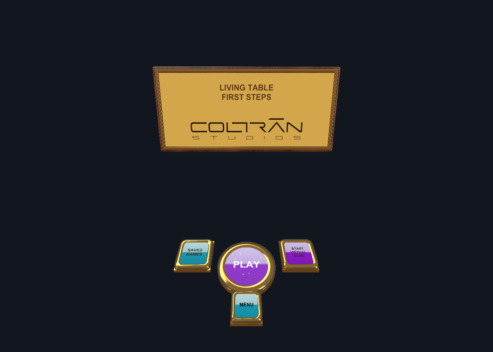

Start at your table.
Align the virtual grid to your physical chessboard. Use your own pieces, with visual guidance and assisted move confirmation.

Your opponent leaves. Your game doesn’t have to end. Take chess from your real table into virtual play—and bring the same game back.

Keep what makes tabletop play special. Add the freedom to continue beyond the table.
Align the virtual grid to your physical chessboard. Use your own pieces, with visual guidance and assisted move confirmation.
Continue the same position virtually against AI. Move pieces with your hands and place the virtual table where it suits you.
Bring your progress back. Update the physical pieces to match the saved position, confirm the layout, and keep playing.
A focused chess alpha with a bigger idea behind it: make physical and digital board play feel connected.
We build, play in the headset, inspect failures, and refine. This is an early alpha—not a promise that recognition is perfect.
Pinch pieces. Reposition the table. Adjust the fit to your physical set.
Three AI difficulty settings with distinct playing tendencies.
Saved games and named captures let you return to a position.
Jump directly into virtual chess against AI while your room stays visible.


Try the Quest 3 alpha through the existing Meta release-channel invitation. This is early test software, not a public store release. Meta requires an eligible account, age 18+ and acceptance of its channel terms; access is subject to availability.
The invitation opens the correct release channel. Installation and play through a fresh non-developer account have not yet been independently verified. The submitted build is unchanged.
Tell us how your first game went: headset, physical or virtual mode, what worked and where you needed help. Please do not send recordings of other people without their consent.
Like the project on Devpost and follow the studio dev log. A like supports the idea; honest feedback helps us build it.
Our full development retrospective is complete. The next chapter focuses on:
Recognition remains an active development area; manual confirmation remains available.
Read the development storyOur direction is free-to-play with optional premium cosmetics. Jade materials in the alpha are a starting point for original collections, designed with the care you would expect from a beautiful physical chess set.
Paid collections are in development. No checkout, preorder or purchase is offered yet.
This opens an email to the studio. It does not subscribe you to a mailing list or reserve an item.
No. Start Virtual Game begins directly against AI. A physical chessboard and pieces are needed for physical play.
No. Camera recognition is an active development area. Lighting, viewing angle and occlusion affect results. The alpha includes manual confirmation to keep play moving.
Our hands-on development and testing has focused on Meta Quest 3. We are not claiming support for untested devices.
We plan to explore more board games, expressive AI opponents, optional coaching and richer personalization. Future publisher and licensor partnerships are an ambition, not announced agreements.
If you want familiar games to feel new again, help us take the next step.